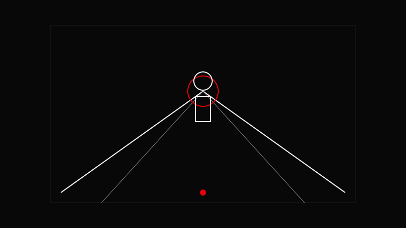

AVA CREATORS TOOLKIT · FRAMING
LEADING LINES
Use lines to direct attention
Use lines to direct attention

Use lines to direct attention, not distract from it.
Look for natural lines in the environment.
Position your subject at the end of the line.
Adjust angle to strengthen the line.
Keep lines clean—avoid clutter.
Diagonal lines add more energy than horizontal ones.
Letting lines lead out of the frame instead of toward the subject.